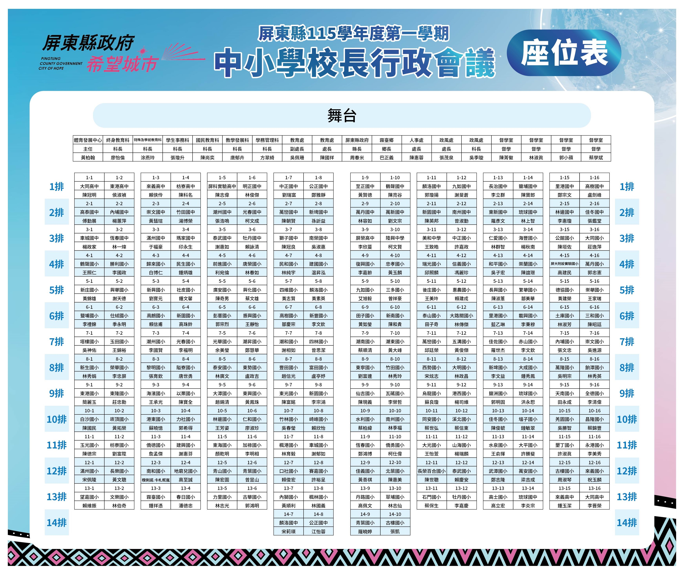

🔙 上一頁
屏東縣115學年度第一學期
中小學校長行政會議
EN
🏠 首頁
歡迎蒞臨
請選擇您的動作
資料載入中...
資料載入中...
進入會議簡報
資料載入中...
資料載入中...
📱 掃描 QR Code，手機免網址直接簽到
請選擇服務機關類別
🏛️ 屏東縣政府
🏫 各級學校
✏️ 其他 (來賓/工作人員自填)
屏東縣政府 長官與單位
請選擇鄉鎮市
請選擇處室/單位
請選擇姓名
請填寫基本資料
服務機關 (如: 某某基金會)
單位/處室 (選填)
職稱 (選填)
您的姓名 (必填)
下一步：餐點與簽名
歡迎載入中...
您今日的午餐用餐需求為：
🍱 葷食
看菜色 📸
🥗 素食
❌ 不用餐
請在下方方框內簽下您的大名：
↺ 簽名不滿意，清除重簽
確認送出
⚙️ 報到管理中心
應到總人數
0
已簽到人數
(點擊看分類)
0
已簽退人數
(點擊看分類)
0
尚未簽到人數
(點擊看分類)
0
葷食需求 (簽到)
(點擊看分類)
0
素食需求 (簽到)
(點擊看分類)
0
不用餐需求 (簽到)
(點擊看分類)
0
🗑️ 依機關尋找並刪除指定簽名
📄 一鍵下載所有簽名 (Word可編輯)
📊 一鍵下載所有簽名 (Excel可編輯)
分類列表
詳細名單
提示：點擊右側刪除按鈕可讓該員重新簽到
✅ 簽到成功！
感謝您的參與，已收到您的用餐資訊，祝您有愉快的一天。
🔍 支援手指滑動，或點擊圖片放大/縮小查看

回首頁 (或等待自動跳轉)
目前簽到退情形總覽
資料載入中...
編號
機關/學校
單位/鄉鎮
職稱
姓名
手寫簽到
手寫簽退
回首頁
×